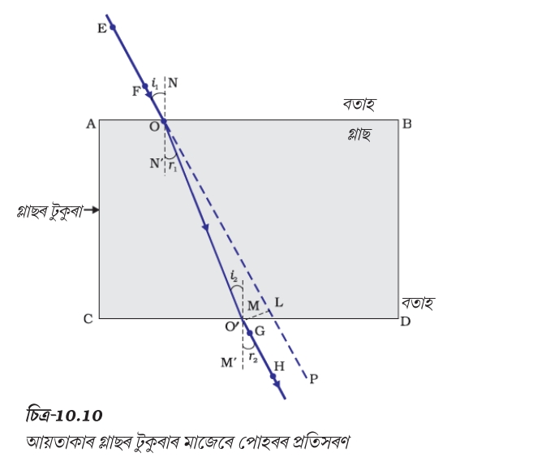

(পোহৰ আৰু গোলাকাৰ দাপোণৰ প্ৰতিফলন)
পোহৰ হৈছে এক প্ৰকাৰৰ শক্তি যিয়ে আমাক বস্তু দেখা সম্ভৱ কৰি তোলে।
যিবোৰ বস্তুৱে নিজে পোহৰ নিৰ্গত কৰে, সেইবোৰক পোহৰৰ উৎস বোলা হয়।
ইয়াক পোহৰৰ সৰলৰেখীয় গতি (Rectilinear Propagation of Light) বোলা হয়।
উদাহৰণ :
যেতিয়া পোহৰ কোনো পৃষ্ঠত পৰি পুনৰ একে মাধ্যমলৈ উভতি আহে, তেতিয়া প্ৰতিফলন ঘটে।
যেতিয়া পোহৰ এটা মাধ্যমৰ পৰা আন এটা মাধ্যমলৈ যায়, তেতিয়া ইয়াৰ দিশ সলনি হয়।
বগা পোহৰ সাতটা ৰঙত বিভক্ত হয়।
VIBGYOR
যেতিয়া পোহৰ কোনো পৃষ্ঠত পৰি একে মাধ্যমলৈ ঘূৰি আহে, তেতিয়া সেই ঘটনাক পোহৰৰ প্ৰতিফলন বোলা হয়।
উদাহৰণ :
আপতিত ৰশ্মি, প্ৰতিফলিত ৰশ্মি আৰু আপতন বিন্দুত অংকিত লম্ব একে সমতলত অৱস্থিত থাকে।
আপতন কোণ প্ৰতিফলন কোণৰ সমান।
য'ত,
প্ৰশ্ন :
এটা পোহৰৰ ৰশ্মি দাপোণত 35° আপতন কোণত পৰিল। প্ৰতিফলন কোণ নিৰ্ণয় কৰা।
সমাধান :
i = 35°
প্ৰতিফলনৰ সূত্ৰ অনুসৰি,
সেয়েহে,
উত্তৰ : 35°
যি দাপোণৰ প্ৰতিফলক পৃষ্ঠ এটা গোলকৰ অংশ হয়, তাক গোলাকাৰ দাপোণ বোলা হয়।
গোলাকৰ দাপোণ দুই প্ৰকাৰৰ—
যি দাপোণৰ প্ৰতিফলক পৃষ্ঠ ভিতৰলৈ বেঁকা থাকে।
ইয়াক অভিসাৰী দাপোণ (Converging Mirror) বুলিও কোৱা হয়।
যি দাপোণৰ প্ৰতিফলক পৃষ্ঠ বাহিৰলৈ বেঁকা থাকে।
ইয়াক অপসাৰী দাপোণ (Diverging Mirror) বুলিও কোৱা হয়।
দাপোণৰ প্ৰতিফলক পৃষ্ঠৰ মধ্যবিন্দুক মেৰু বোলা হয়।
যি গোলকৰ অংশ হিচাপে দাপোণ গঠিত হয়, সেই গোলকৰ কেন্দ্ৰক ভাঁজ কেন্দ্ৰ বোলা হয়।
মেৰু (P) আৰু বক্ৰতাৰ কেন্দ্ৰ (C)-ৰ মাজৰ দূৰত্ব।
মেৰু আৰু ভাঁজ কেন্দ্ৰক সংযোগ কৰা সৰল ৰেখাক মুখ্য অক্ষ বোলা হয়।
মুখ্য অক্ষৰ সমান্তৰাল পোহৰৰ ৰশ্মিসমূহ প্ৰতিফলনৰ পিছত যি বিন্দুত মিলিত হয় (বা মিলিত হোৱা যেন দেখা যায়), সেই বিন্দুক মুখ্য ফ'কাছ বোলা হয়।
অৱতল দাপোণত : বাস্তৱ ফ'কাছ
উত্তল দাপোণত : কাল্পনিক ফ'কাছ
মেৰু আৰু ফ'কাছৰ মাজৰ দূৰত্ব।
এটা দাপোণৰ ভাঁজ ব্যাসাৰ্ধ 40 cm। ফ'কাছ দূৰত্ব নিৰ্ণয় কৰা।
উত্তৰ : 20 cm
সকলো দূৰত্ব মেৰু (P)ৰ পৰা জোখা হয়।
আপতিত পোহৰৰ দিশত জোখা দূৰত্ব ধনাত্মক (+)।
আপতিত পোহৰৰ বিপৰীত দিশত জোখা দূৰত্ব ঋণাত্মক (-)।
মুখ্য অক্ষৰ ওপৰত থকা উচ্চতা ধনাত্মক (+)।
মুখ্য অক্ষৰ তলত থকা উচ্চতা ঋণাত্মক (-)।
| ৰাশি | অৱতল দাপোণ | উত্তল দাপোণ |
|---|---|---|
| ফ'কাছ দূৰত্ব (f) | ঋণাত্মক | ধনাত্মক |
| ভাঁজ ব্যাসাৰ্ধ (R) | ঋণাত্মক | ধনাত্মক |
| বস্তু দূৰত্ব (u) | ঋণাত্মক | ঋণাত্মক |
| প্ৰতিবিম্ব দূৰত্ব (v) | ঋণাত্মক (বাস্তৱ) আৰু ঋণাত্মক যদি অসৎ প্ৰতিবিম্ব হয় | ধনাত্মক (কাল্পনিক) |
বস্তু দূৰত্ব (u), প্ৰতিবিম্ব দূৰত্ব (v) আৰু ফ'কাছ দূৰত্ব (f)-ৰ মাজৰ সম্পৰ্ক—
এই সূত্ৰ অৱতল আৰু উত্তল দুয়োটা দাপোণৰ ক্ষেত্ৰতে প্ৰযোজ্য।
15 cm ফ'কাছ দূৰত্ব থকা এটা অৱতল দাপোণৰ সন্মুখত 30 cm দূৰত্বত এটা বস্তু ৰখা হৈছে। প্ৰতিবিম্ব দূৰত্ব নিৰ্ণয় কৰা।
দাপোণৰ সূত্ৰ,
উত্তৰ : v = -30 cm
প্ৰতিবিম্বৰ উচ্চতা আৰু বস্তুৰ উচ্চতাৰ অনুপাতক বিবৰ্ধন বোলা হয়। সৎ প্ৰতিবিম্ব হলে ই ঋণাত্মক হয় আৰু অসৎ প্ৰতিবিম্ব হলে ই ধনাত্মক হয় ।
ইয়াক এনেদৰেও লিখা যায়—
য'ত,
উত্তৰ : m = -2
অৰ্থাৎ—
যেতিয়া পোহৰ এটা স্বচ্ছ মাধ্যমৰ পৰা আন এটা স্বচ্ছ মাধ্যমলৈ যায়, তেতিয়া ইয়াৰ গতিৰ বেগ সলনি হয় আৰু ফলস্বৰূপে পোহৰৰ পথ বেঁকা হয়। এই ঘটনাক পোহৰৰ প্ৰতিসৰণ বোলা হয়।
উদাহৰণ :
যদি দুয়োটা মাধ্যম একে হয়, তেন্তে প্ৰতিসৰণ নঘটে।
আপতিত ৰশ্মি, প্ৰতিসৃত ৰশ্মি আৰু আপতন বিন্দুত অংকিত লম্ব একে সমতলত থাকে।
অথবা
প্ৰশ্ন :
আপতন কোণ 30° আৰু প্ৰতিসৰণ কোণ 20°। প্ৰতিসৰণাংক নিৰ্ণয় কৰা।
সমাধান :
উত্তৰ : 1.46
কোনো মাধ্যমত পোহৰৰ বেগ আৰু শূন্যস্থানত পোহৰৰ বেগৰ অনুপাতক সেই মাধ্যমৰ প্ৰতিসৰণাংক বোলা হয়।
প্ৰশ্ন :
এটা মাধ্যমত পোহৰৰ বেগ 2 × 10⁸ m/s। প্ৰতিসৰণাংক নিৰ্ণয় কৰা।
সমাধান :
উত্তৰ : 1.5
যি মাধ্যমত পোহৰৰ বেগ কম হয়।
উদাহৰণ :
যি মাধ্যমত পোহৰৰ বেগ বেছি হয়।
উদাহৰণ :
লঘুতৰ→ ঘনতৰ: পোহৰ অভিলম্বৰ ফালে বেঁকা হয়।
ঘনতৰ → লঘুতৰ: পোহৰ অভিলম্বৰ পৰা আঁতৰি বেঁকা হয়।

যেতিয়া পোহৰ এটা আয়তাকাৰ কাঁচৰ টুকুৰাৰ মাজেৰে পাৰ হয়—
এই সৰণক পাৰ্শ্বীয় ভাবে হোৱা সৰণ বোলে।
যি স্বচ্ছ মাধ্যম দুটা গোলকীয় পৃষ্ঠ বা এটা সমতল আৰু এটা গোলকীয় পৃষ্ঠৰ দ্বাৰা সীমাবদ্ধ হয়, তাক লেন্স বোলা হয়।
মাজত ডাঠ আৰু প্ৰান্তত পাতল।
ইয়াক অভিসাৰী লেন্স (Converging Lens) বোলা হয়।
মাজত পাতল আৰু প্ৰান্তত ডাঠ।
ইয়াক অপসাৰী লেন্স (Diverging Lens) বোলা হয়।
লেন্সৰ মুখ্য অক্ষত অৱস্থিত এনে এটা বিন্দু যাৰ মাজেৰে পাৰ হোৱা পোহৰৰ ৰশ্মি বেঁকা নোহোৱাকৈ প্ৰতিসৰণ হয়।
লেন্সৰ দুয়োটা গোলকীয় পৃষ্ঠৰ ভাঁজ কেন্দ্ৰ সংযোগ কৰা সৰল ৰেখাডালক মুখ্য অক্ষ বোলা হয়।
মুখ্য অক্ষৰ সমান্তৰাল পোহৰৰ ৰশ্মিসমূহ লেন্সৰ মাজেৰে পাৰ হোৱাৰ পিছত যি বিন্দুত মিলিত হয় বা মিলিত হোৱা যেন দেখা যায়, সেই বিন্দুক মুখ্য ফ'কাছ বোলা হয়।
লওক কেন্দ্ৰ আৰু মুখ্য ফ'কাছৰ মাজৰ দূৰত্বক ফ'কাছ দূৰত্ব বোলা হয়।
সকলো দূৰত্ব আলোক কেন্দ্ৰ (O)ৰ পৰা জোখা হয়।
পোহৰৰ দিশত জোখা দূৰত্ব ধনাত্মক (+)।
পোহৰৰ বিপৰীত দিশত জোখা দূৰত্ব ঋণাত্মক (-)।
মুখ্য অক্ষৰ ওপৰত থকা উচ্চতা ধনাত্মক (+)।
মুখ্য অক্ষৰ তলত থকা উচ্চতা ঋণাত্মক (-)।
বস্তু দূৰত্ব (u), প্ৰতিবিম্ব দূৰত্ব (v) আৰু ফ'কাছ দূৰত্ব (f)-ৰ মাজৰ সম্পৰ্ক—
প্ৰশ্ন :
এটা উত্তল লেন্সৰ ফ'কাছ দূৰত্ব 20 cm আৰু বস্তু দূৰত্ব 60 cm। প্ৰতিবিম্ব দূৰত্ব নিৰ্ণয় কৰা।
সমাধান :
উত্তৰ : 30 cm
প্ৰতিবিম্বৰ উচ্চতা আৰু বস্তুৰ উচ্চতাৰ অনুপাতক বিবৰ্ধন বোলা হয়।
লেন্সৰ ক্ষেত্ৰত,
প্ৰশ্ন :
u = -20 cm আৰু v = 40 cm। বিবৰ্ধন নিৰ্ণয় কৰা।
সমাধান :
উত্তৰ : -2
অৰ্থাৎ প্ৰতিবিম্ব ওলোটা আৰু বস্তুতকৈ দুগুণ ডাঙৰ।
লেন্সে পোহৰক অভিসাৰণ বা অপসাৰণ কৰাৰ ক্ষমতাক লেন্সৰ ক্ষমতা বোলা হয়।
চিহ্ন : P
একক : ডাইঅপ্টাৰ (D)
ইয়াত f মিটাৰত ল'ব লাগে।
প্ৰশ্ন :
এটা উত্তল লেন্সৰ ফ'কাছ দূৰত্ব 50 cm। ক্ষমতা নিৰ্ণয় কৰা।
সমাধান :
উত্তৰ : +2 D
প্ৰশ্ন :
এটা অৱতল লেন্সৰ ফ'কাছ দূৰত্ব -25 cm। ক্ষমতা নিৰ্ণয় কৰা।
সমাধান :
উত্তৰ : -4 D
যদি একাধিক লেন্স একেলগে ব্যৱহাৰ কৰা হয়, তেন্তে মুঠ ক্ষমতা পৃথক লেন্সসমূহৰ ক্ষমতাৰ যোগফলৰ সমান হয়।
প্ৰশ্ন :
এটা +2 D আৰু এটা +3 D লেন্স একেলগে ব্যৱহাৰ কৰা হ'ল। মুঠ ক্ষমতা নিৰ্ণয় কৰা।
সমাধান :
উত্তৰ : +5 D
অণুবীক্ষণ যন্ত্ৰত দুটা উত্তল লেন্স ব্যৱহাৰ কৰা হয়।
দূৰবীনতো দুটা উত্তল লেন্স ব্যৱহাৰ কৰা হয়।